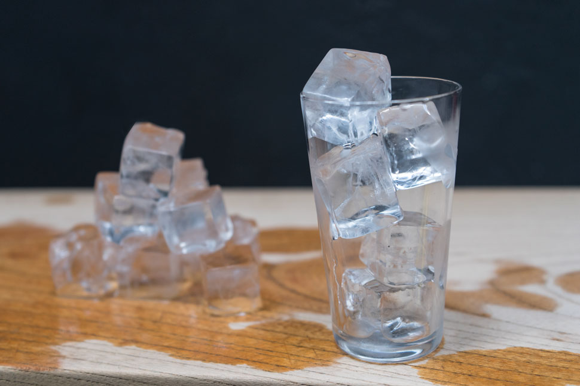
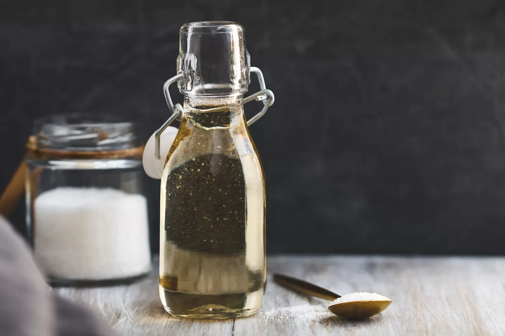
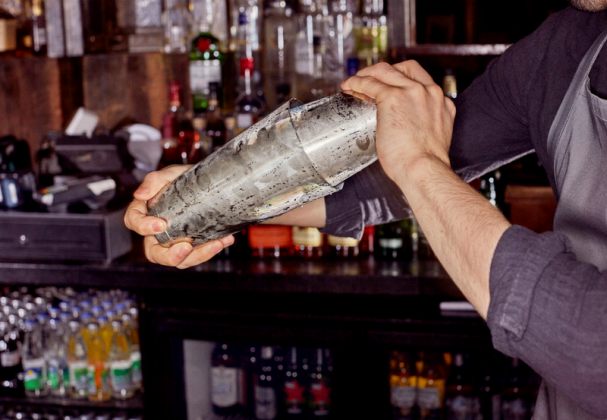

The more ice you have, the quicker you chill your drink, the quicker you chill your drink, the slower the dilution will be. This should not be confused as “more ice means less dilution” because if you leave your drink for half an hour, you'll have a big old glass of water.
Simple syrup is, as the name implies, very simple to make from scratch. It's also the most budget-friendly drink sweetener you'll find, costing just pennies per batch. Also known as "sugar syrup," the only ingredients you need are sugar and water, so anyone can do it.
Once you learn how easy it is, you'll discover just how essential it is to keep simple syrup in stock for your bar and kitchen. It's found in many mixed drink and cocktail recipes, and you can use it to sweeten your coffee, tea, and homemade lemonades and sodas. Since the sugar is already dissolved into the syrup, it's much easier to mix into cold beverages.
There are two primary simple syrup ratios. Rich simple syrup means that you're using more sugar than water to create a richer syrup. It has a 2:1 ratio and is sweeter and thicker. You can also make a simple syrup with equal parts (1:1) of sugar and water. It will be a little thinner, and it will add just a touch of sweetness to your drinks. The 1:1 syrup is nice for flavored syrups and primarily used by bartenders, so many cocktail recipes assume that's what you're using. If you prefer a rich syrup, know that you'll likely want to use about 1/4 ounce less than what the drink recipe calls for.
With either option, the recipe will yield between 1 cup and 1 1/2 cups of syrup. You can make as small or as large a batch as you wish, just keep the same proportions. Once done, store it in the refrigerator in a well-sealed bottle where it will keep for up to a month.
You do the shake with ice for rapid cooling, thorough mixing, some amount of dilution and finally to get a little bit of finely crushed ice floating on top of the drink as a texture thing.
Pouring the drink off of the ice arrests the dilution process at a desirable level of dilution, now in most cases a shaken drink is going to be poured into a coupe or martini glass with no ice. However in the case where you are pouring onto ice cubes in highball or rocks glass you are substantially slowing the dilution process down at that point since the shaken ice has more surface area for melting to occur, but frankly it's really mostly about the visual appeal of the drink, fresh ice just looks nicer in the glass.
As for stirred cocktails it's mostly the most practical way to go from a lot of ice in the stirring vessel to a much smaller amount of ice in the glass (thus greatly reducing the surface area and dilution rate), one could pick ice out of the mixer with tongs and move it to the glass before straining but that would be a messy operation.
The only time I would do a dirty dump would be if I had a really boozy drink that I wanted to keep diluting in the glass before it got drunk, but only if I didn't have pebble ice or crushed ice to pour the drink into.
